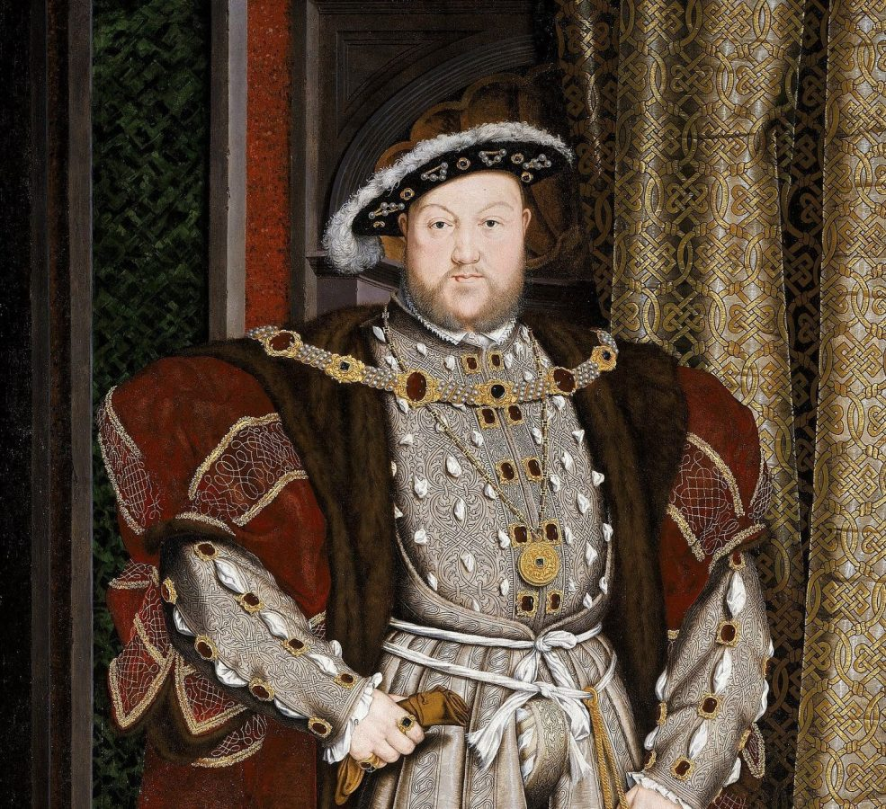
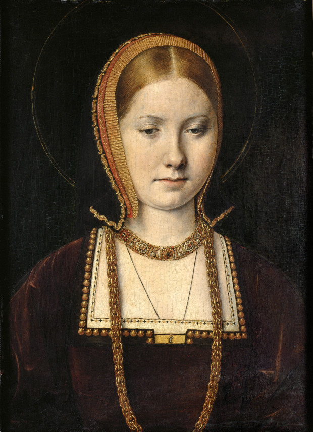
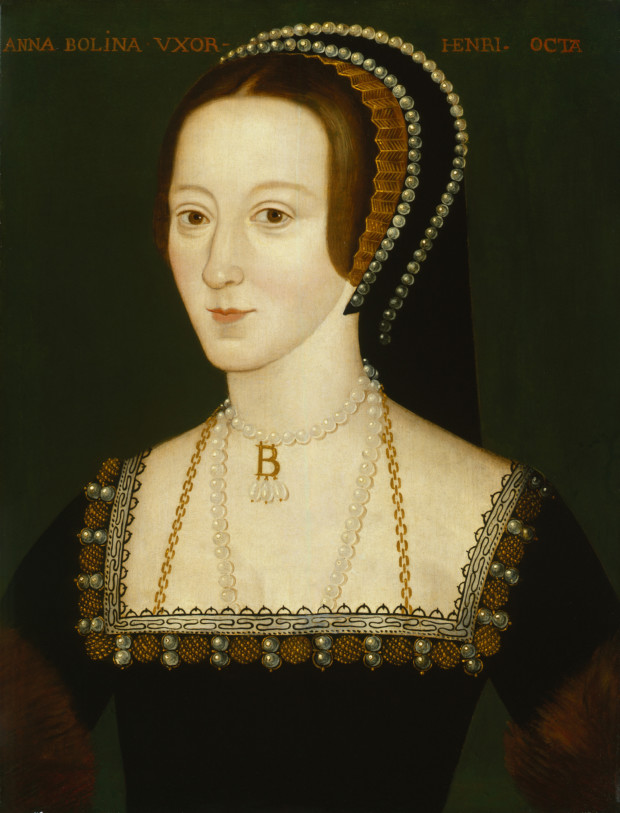
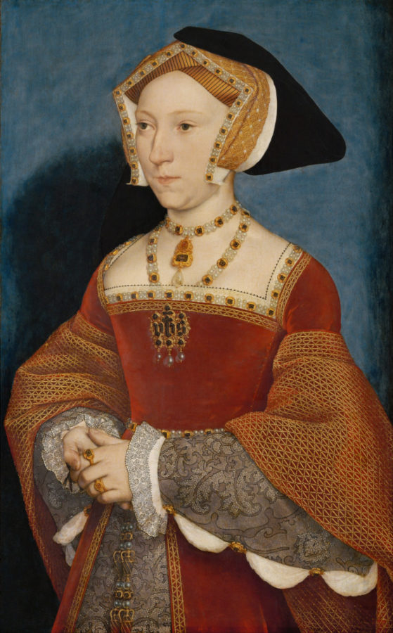
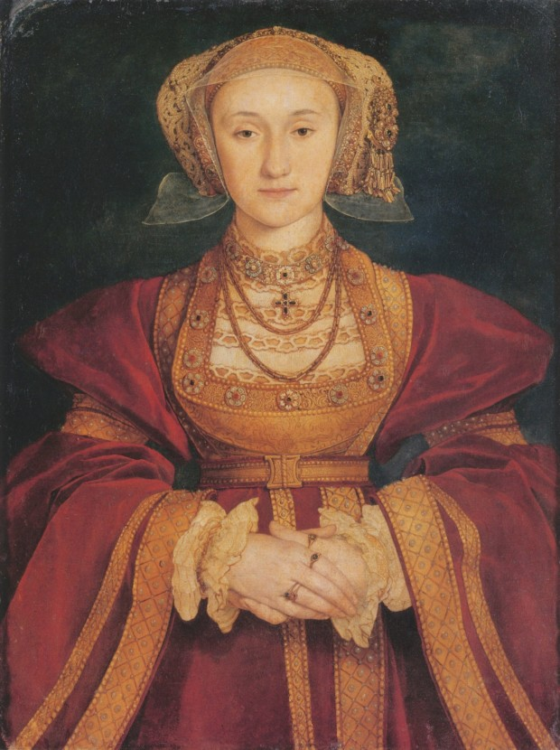
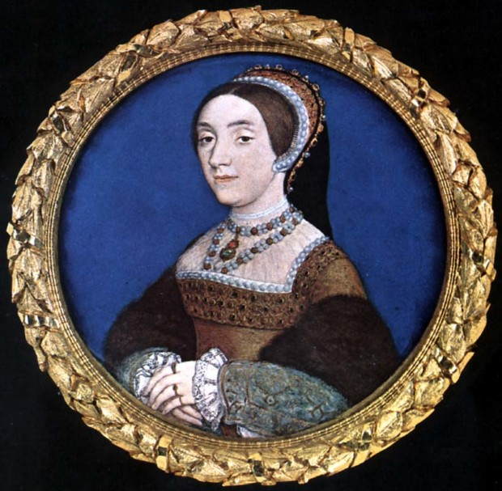
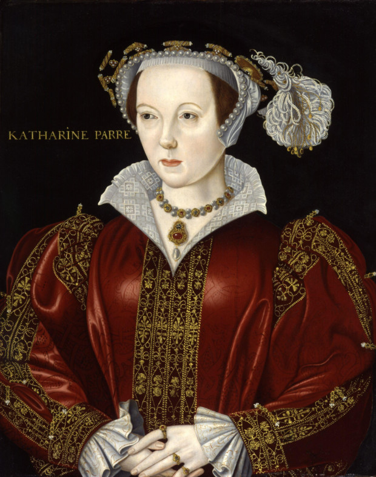
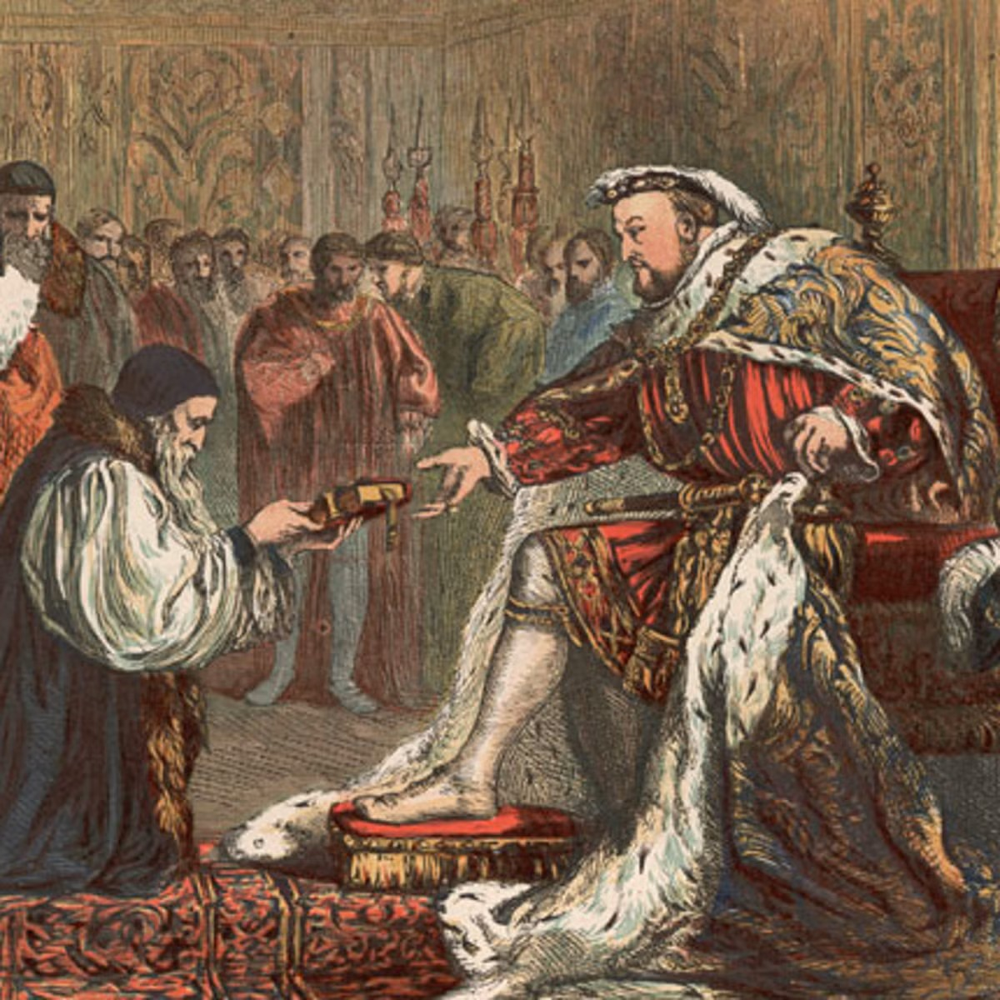
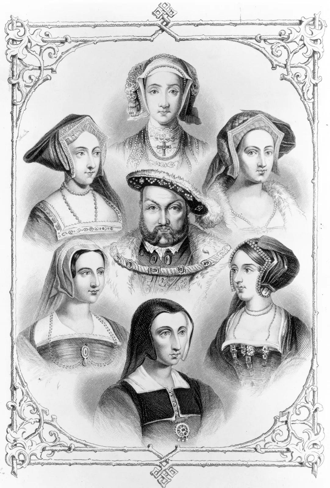

You have travelled back in time to Tudor England in 1536.
Anne Boleyn has been imprisoned in the Tower of London and is facing execution.
Your mission is to use your knowledge of Henry VIII and Tudor England to rescue Anne Boleyn before it is too late.

Henry VIII became King of England in 1509 and ruled until his death in 1547.
He was the second Tudor king.
Henry is famous for:
Catherine was Henry's first wife. They had a daughter called Mary, but they did not have a surviving son.

Anne was Henry's second wife. She gave birth to Elizabeth, who later became Queen Elizabeth I.
Anne was arrested and executed in 1536.

Jane gave Henry the son he wanted, Edward. She died shortly after Edward was born.

Anne was Henry's fourth wife. Their marriage was annulled.

Catherine was Henry's fifth wife and was later executed.

Catherine was Henry's sixth and final wife. She survived Henry VIII.

Henry desperately wanted a son who could become king after him.
Catherine of Aragon had a daughter called Mary.
Anne Boleyn had a daughter called Elizabeth.
Jane Seymour finally gave Henry a son called Edward in 1537.
Edward later became King Edward VI.

Henry wanted to end his marriage to Catherine of Aragon so that he could marry Anne Boleyn.
The Pope would not grant Henry the annulment he wanted.
Henry eventually rejected the Pope's authority in England.
This became an important part of the English Reformation.

You have completed your crash course.
Now use what you have learned to rescue Anne Boleyn!